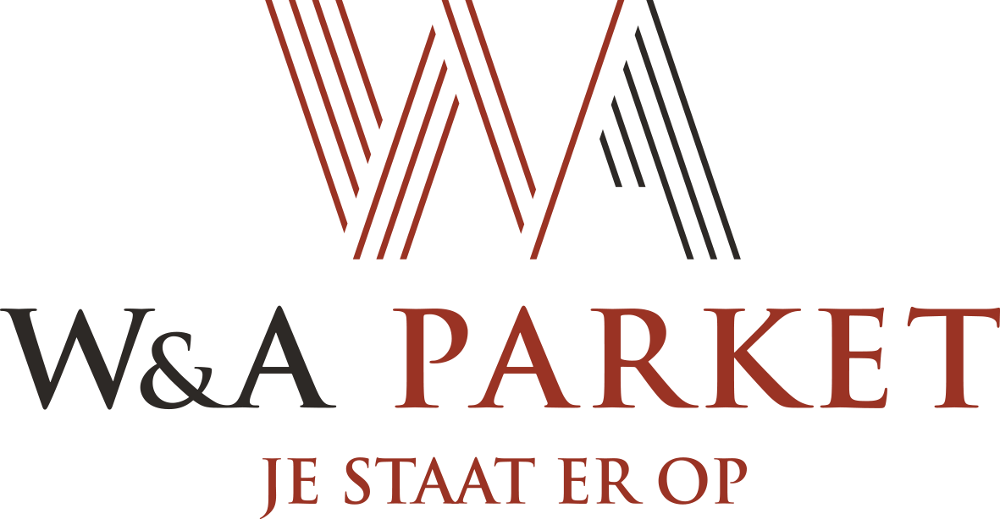
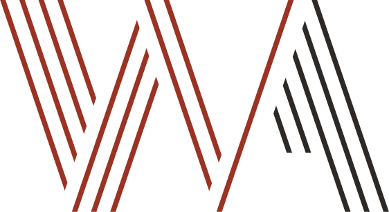
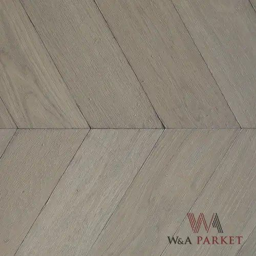

Vakmanschap dat
je voelt onder je voeten.
De basis voor de nieuwe wa-parket.be: logo, kleur, typografie, knoppen en beeld. Alles is afgeleid van het bestaande merk, maar strakker toegepast.


De basis voor de nieuwe wa-parket.be: logo, kleur, typografie, knoppen en beeld. Alles is afgeleid van het bestaande merk, maar strakker toegepast.
Primair: op wit/linnen
Op donker (afgeleid, geen origineel)

Beeldmerk los: favicon, social, ornament
De strepen uit het beeldmerk lezen als planken. Ze komen op de site maar op één plek terug: het beeld in de hero, dat in vier planken wordt gelegd. Het watermerk op de foto's verdwijnt.
De oude navigatie haalde 3,3:1 (grijs op crème). De nieuwe komt op 13,4:1 (warm zwart op linnen).
Primair: gevuld · Secundair: omlijnd · Tertiair: tekstlink met onderlijn. Hoogte 48px, radius 2px, Montserrat 600. De oude knoppen ("Bekijk meer", 14px/300) waren niet van lopende tekst te onderscheiden.





⚠️ Bijna alle foto's hebben een watermerk en de banners zijn maar 1110px breed. Voor productie zijn de originelen nodig.
Een Garamond-titel volstaat, zonder labels erboven. De schaal loopt van 76 naar 24. Nooit meer elf identieke H2's.
Off-white, crème, warm zwart en een vollebreedte-beeld wisselen elkaar af. Tussen secties is de witruimte groter dan tussen items.
Een sticky nav met de primaire knop. Op mobiel een vaste balk met bellen en een afspraak.